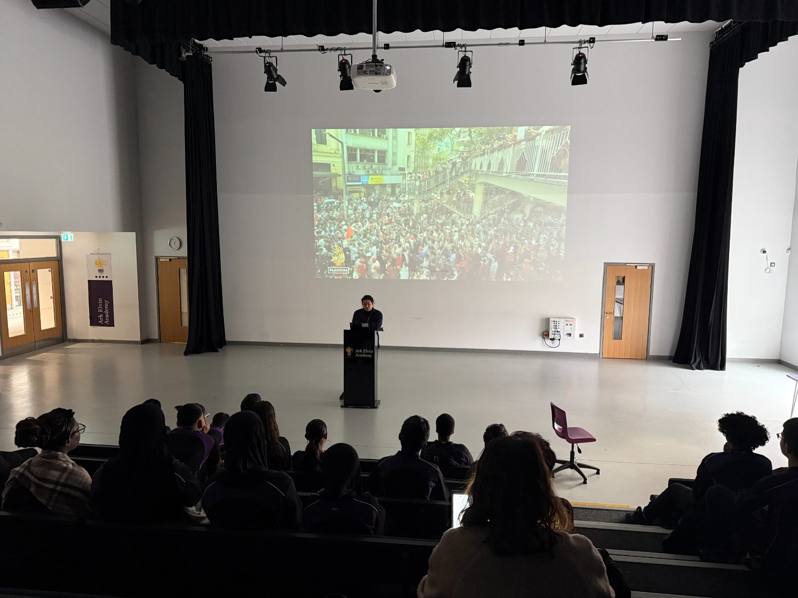
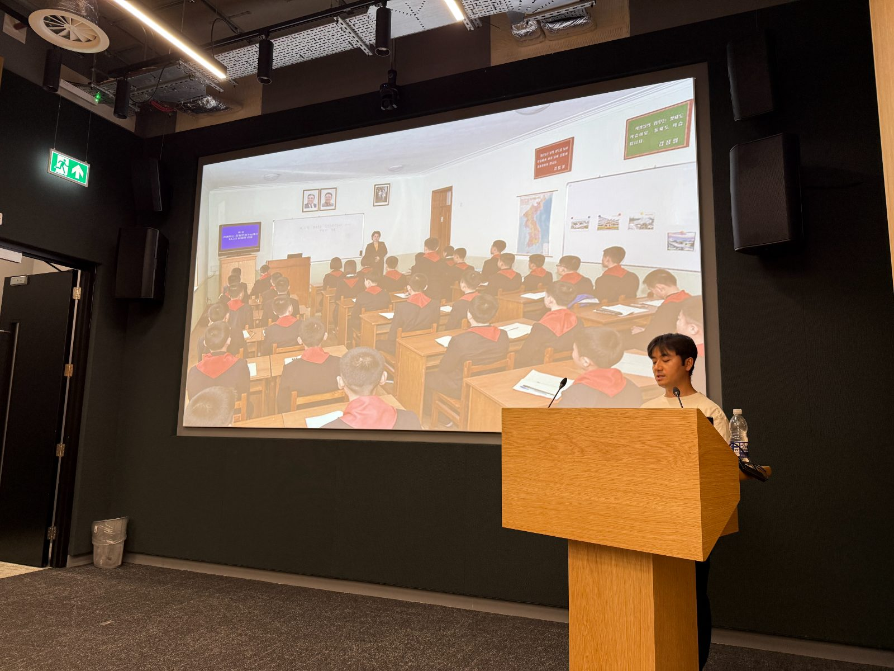
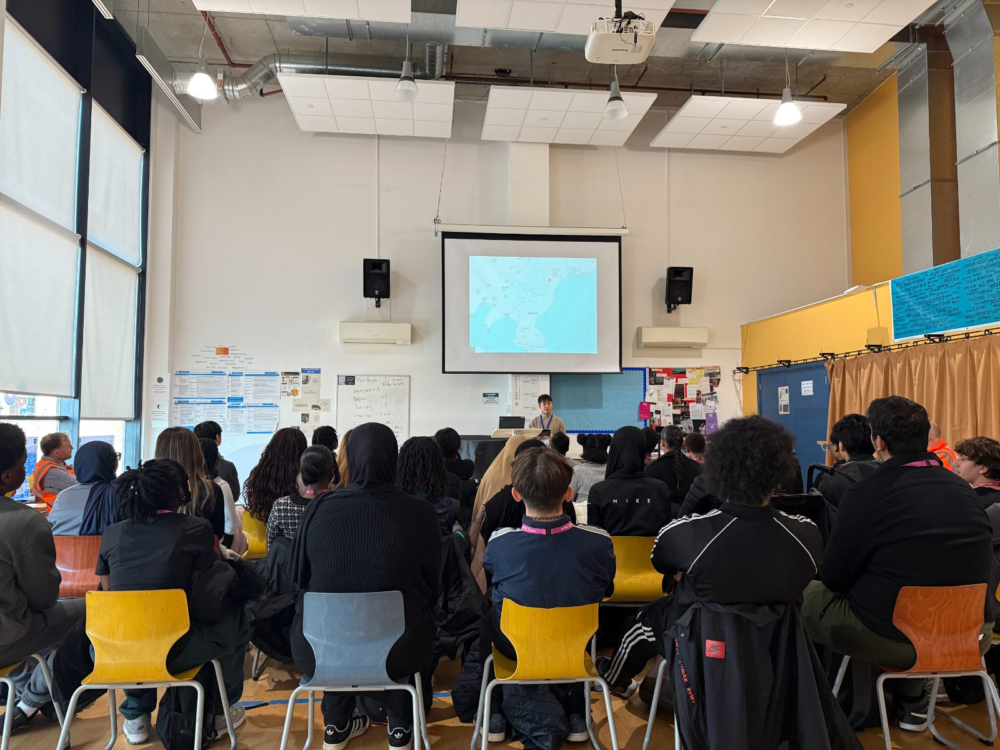
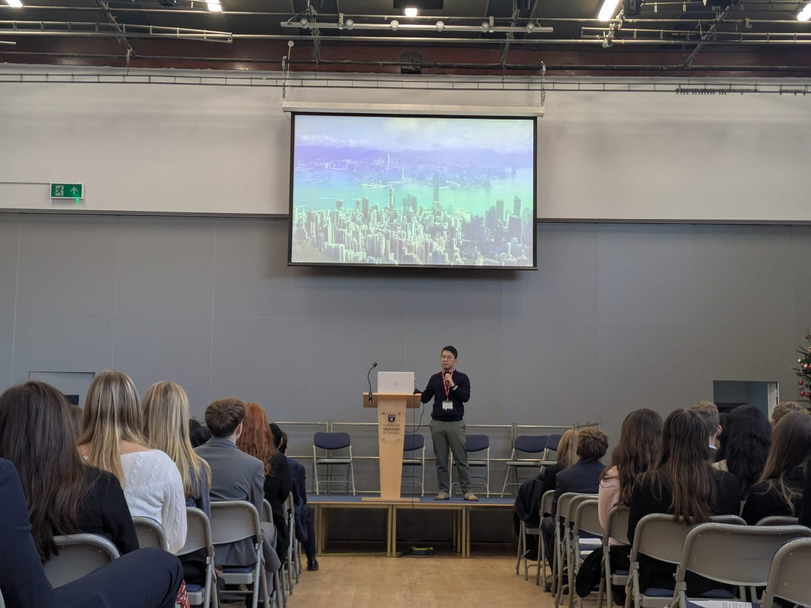

Unforgettable moments to learn about democracy and freedom
Project Civic Square brings individuals who fled authoritarian countries and their stories into UK classrooms — helping students understand their power, their rights, and why democracy is worth defending.
Our mission
Project Civic Square was founded in 2025 to tackle one of the biggest problems in British society: young people feeling disillusioned with democracy.
Young people are more detached from democratic and social norms and are more dissatisfied with the state of democracy.
We are a group of passionate educators, in partnership with local charities, that bring the best form of democracy education to young Britons, free of charge. Civic Square connects schools with trained speakers who share powerful, real-world experiences with students.
We work with secondary schools across the UK, providing resources and speakers that align with teachers' needs and the National Curriculum.
The issue is pressing
Young people can vote at age 16 — yet schools are not well equipped to help them navigate their new power and rights.
Our theory of change
- Enjoyable for teachers — democracy education they look forward to, not another burden on the timetable.
- Inspiring for students — first-hand testimonies bring democracy and freedom to life in ways textbooks cannot.
- Lasting for society — youth participation and resilience that outlast a single lesson.
Powerful sessions for students, minimal workload for teachers
Once your school files an application, we arrange the visit with you — and handle most of the logistics.
🕐 Flexible formats
45–60 minute classroom sessions or whole-school assemblies — whatever fits your timetable.
📚 Curriculum-aligned
Topics that align with Citizenship & PSHE, Politics & Global Studies, and other subjects.
🤝 We do the heavy lifting
Minimal workload for teachers — we handle most of the logistics from application to visit.
A strong proof of concept
In our pilot phase we took real stories of democracy and freedom into schools — and measured what students took away.
found the sessions informative (4.4 / 5)
reported a better understanding of life in countries with fewer freedoms (4.3 / 5)
would recommend the sessions to other students (4.4 / 5)
reported a stronger understanding of the value of democracy (4.1 / 5)
Testimonies from students and teachers
Drawn from the 610+ feedback forms and conversations gathered during our pilot term.
“Our pupils were receptive to Jihyun and were able to ask lots of questions at the end of her presentation. This was good to have the opportunity to do, as the pupils were more involved and able to delve deeper into some of the things that she had shared.
Teacher · State school in Merseyside
“Nathan’s a great presenter, and there was so much that the students didn’t know about the history and current situation in Hong Kong. It was an incredibly needed talk in today’s climate of disinformation, misinformation, and the rise of populism threatening our own democracy.
Teacher · Grammar school in Chesham
“Jinhyuk was very open to sharing the hard parts about life, and was transparent about what defecting actually looked like, which helped students picture the reality of his situation.
Teacher · International school in London
“I have no idea a large quantity of people in today’s society faced struggle like this.
Student · State school in Enfield
“Everything Jinhyuk said was fascinating, my favourite quote was “human curiosity is stronger than fear”.
Student · International school in London
“Jinhyuk’s discussion on freedom and why he knows it to be worth protecting was clear and helpful in bringing his story back to the key ideas in politics that students study.
Teacher · International school in London
Moments from our sessions
Real stories of democracy and freedom, brought into classrooms and assembly halls across the country.




The voices behind the sessions
Our trained speakers share first-hand testimonies of life without freedoms. Click to read their profiles. The list is not exhaustive.
Bring Civic Square to your school
Whether you'd like to request a session, support the project, or simply learn more about the programme — we'd love to hear from you. Participation is completely free.
Request a sessionor write to civicsquareuk@gmail.com